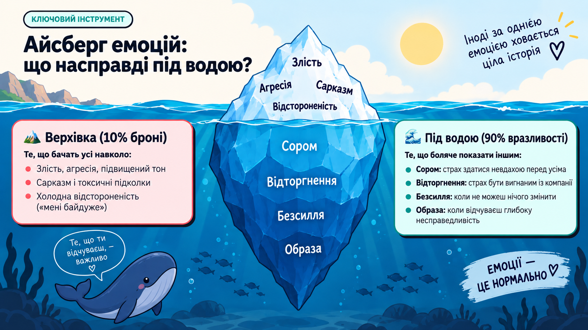
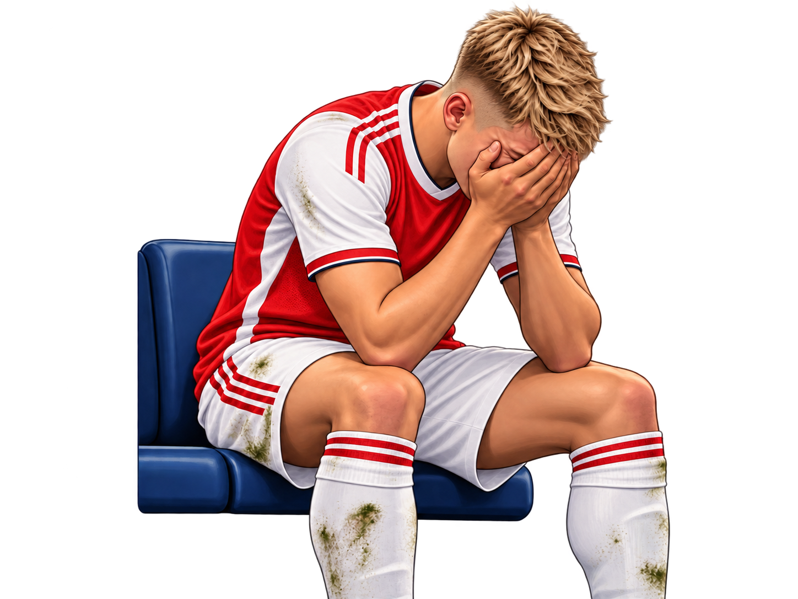

Чому крик, сарказм чи холодне «та мені пофіг» — це лише захисна броня, і як вчасно помітити власне закипання.
П'ять ключових зупинок 60-хвилинного воркшопу:
Підліткові тригери в чатах, школі та вдома.
Амигдала, викид адреналіну й тріада захисту.
Які вразливі почуття ховаються під водою.
Практика відкритого діалогу в Breakout Rooms.
Правило 10 секунд і власний протокол.
Ти заходиш у класну бесіду, а там свіже повідомлення. Що першим спалахує всередині?
У кожної людини свій поріг чутливості. Це спільний вимірювальний прилад групи на сьогодні — клікни на свій рівень, коли хтось голосно розмовляє поруч, доки ти зосереджуєшся:
Працюємо прямо в загальному просторі по двоє. Один учасник зачитує фразу, інший миттєво називає свій бал (1–5) і першу реакцію:
👉 Учасник Б: скажи свій рівень барометра та перший імпульс тіла.
👉 Учасник А: зафіксуй свій бал барометра у відповідь.
Клікай стрілки та покажи на пальцях свій рівень (1–5):
Тебе без попередження зам'ютили або кікнули з войсу під час важливого раунду, а потім сміються: «Та це рофл, чого ти ниєш!»
Рівень підпалу за шкалою від 1 до 5?
Ти прийшов(-ла) втомлений(-а) зі школи, щойно впав(-ла) на ліжко з телефоном видихнути — і в кімнату без стуку залітають із претензією: «Знову в екрані? А посуд хто помиє? Ти взагалі нічого не робиш!»
Рівень підпалу за шкалою від 1 до 5?
Хтось зробив скриншот твого особистого листування з таємницею і переслав у загальну бесіду без дозволу.
Рівень підпалу за шкалою від 1 до 5?
Вчитель перед усім класом коментує твою роботу: «Ну від тебе я більшого й не чекав(-ла)». Усі однокласники повертаються на тебе.
Рівень підпалу за шкалою від 1 до 5?
Коли підліток гарчить у відповідь, грюкає дверима або кидає: «Та відчепіться, мені пофіг!».
Здається, що це просто нахабство або злість без причини.
Чим сильніша маска байдужості чи агресії — тим міцнішу броню людина будує навколо власної вразливості.
Агресія — це не бажання зробити боляче. Це спроба приховати, що тобі щойно зробили дуже боляче.
Древня частина мозку. Вона не відрізняє образу в чаті чи вдома від нападу тигра. Для неї шейм = смертельна загроза. Вона миттєво блокує логіку й вимагає різкої відсічі або втечі.
Відповідає за дотепні аргументи, самоконтроль і наслідки. Проблема: під час спалаху амигдали кора буквально знеструмлюється. Розумні думки повертаються лише тоді, коли адреналін спаде.
Клікни на ту, яка вмикається в тебе найчастіше:
Натиск: капслок, сарказм, токсичні підколки, бажання різко осадити співрозмовника.
Втеча: ливнути з чату, кинути в ЧС, навушники у вуха, вдати, що нічого не було.
Ступор: посміхаєшся, коли тебе ображають. А геніальні відповіді приходять о 2-й ночі в душі.
Тіло вмикає датчик за 2 секунди до реакції. Клікни на свої головні симптоми:

Ситуація:
Ден після програного раунду агресивно кричить на тіммейта: «Ти взагалі грати не вмієш, видали гру й не ганьбися перед нормальними людьми!»
Яка справжня емоція під водою в Дена?
Ситуація:
У відповідь на претензію «Ти знову в екрані, посуд не помитий!» підліток кричить: «Та відчепіться від мене всі!» і грюкає дверима кімнати.
Що насправді під водою в підлітка в цей момент?
Спробуй спочатку сформулювати дорослу відповідь вголос, а потім тисни кнопку й перевір переклад:
Коли амигдала кипить, марно казати собі «заспокойся». Повертаємо кров у логічну кору через сенсорні канали:
Тут немає оцінок. Мета — один раз спробувати сказати про почуття прямо.
Друг розповів твій секрет заради рофлу в компанії. Замість крику: як назвати біль від зради прямо?
Батьки забрали телефон перед важливою грою з друзями через оцінку. Як заявити про свої межі без хлопання дверима?
Тебе єдиного не покликали на день народження зі спільної компанії. Як з'ясувати це без токсичних сторіз?
Агресія — це колюча маска, вона створює ілюзію захисту. А сказати «мені було боляче» — це свідомо скинути броню перед іншою людиною.
Коли ти відмовляєшся від токсичного нападу, співрозмовнику просто немає по чому бити у відповідь — градус сварки падає миттєво.
Три обов'язкові фільтри перед відправкою гнівного коментаря чи войсу:
Прибери пальці від екрана на 10 секунд. Дай амигдалі зробити видих.
Що мене зачепило: сором, образа, страх втратити друзів чи несправедливість?
Я хочу довести свою правоту будь-якою ціною чи зберегти стосунки й вирішити проблему?
Зафіксуй для себе свій персональний алгоритм:
Матч за чемпіонство Англії. Олександр Зінченко помиляється, суперник забиває гол. Тренер замінює його — він сідає на лаву і ховає обличчя в долонях від сліз.
🎭 Верхівка (що бачили трибуни й камера):
Дорослий топ-гравець плаче, закривається від партнерів, не реагує на спроби його заспокоїти.
🧊 Що насправді під водою:
Колосальний тягар провини перед командою, страх підвести мільйони вболівальників і безсилля повернути ту фатальну секунду назад.

Згадайте недавній конфлікт блогерів, тіктокерів чи стрімерів, за якими ви стежите:
Публічні викриття, взаємні звинувачення в сторіз, демонстративні відписки або токсичні стріми.
Який страх насправді лежав на дні: страх втратити охоплення, заздрість чи образа на колишнього друга?
Уявіть, що ви їхній радник. Як вони могли розрулити цю ситуацію без публічного шейму?
Справжня сила — це не відсутність злості. Це вміння побачити свій айсберг до того, як ситуація перетвориться на катастрофу.